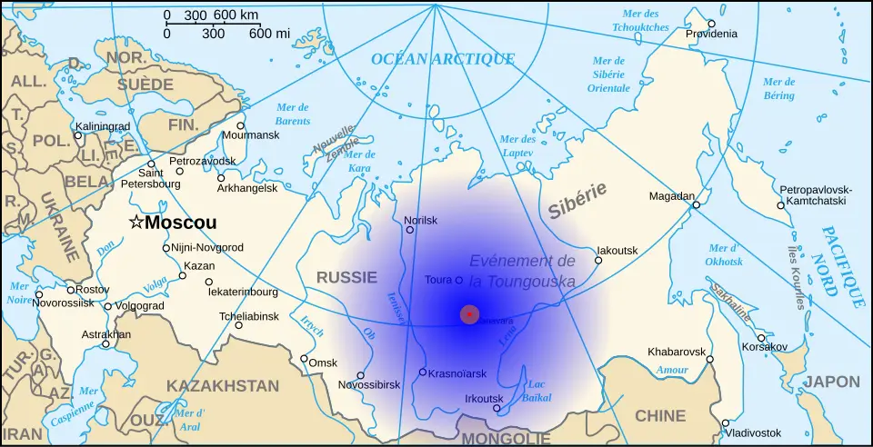
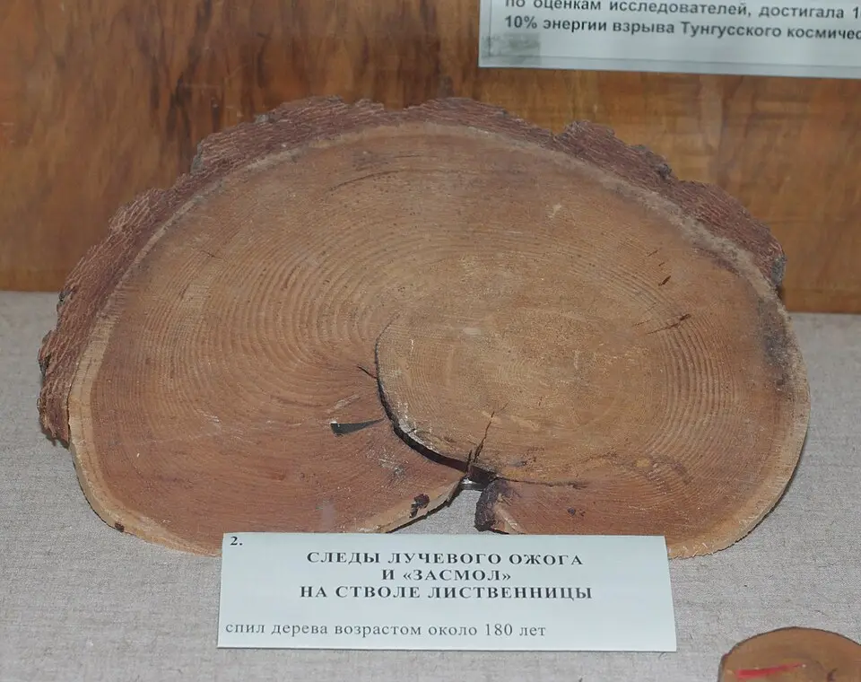
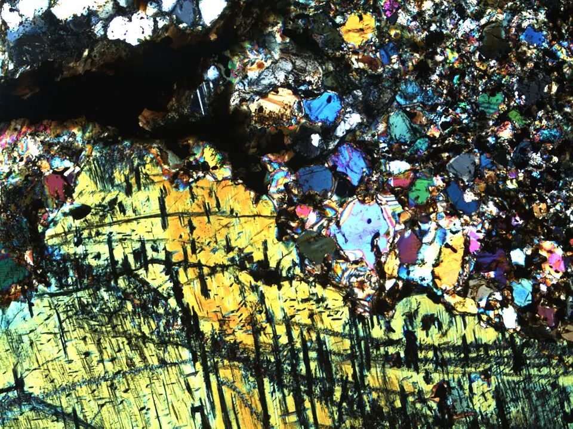
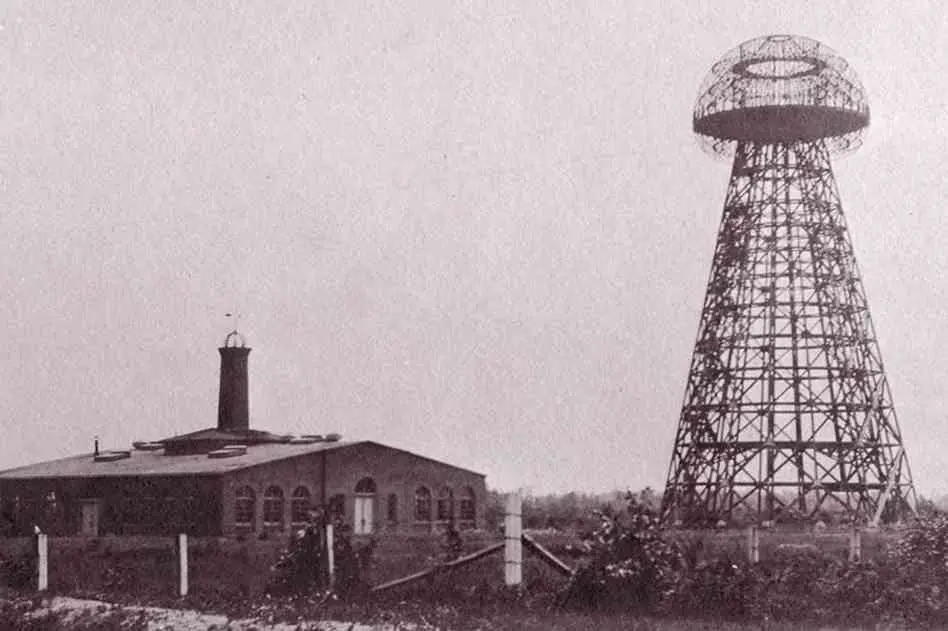

Vụ nổ Tunguska: cả một vùng rừng Siberia đổ rạp mà không có miệng hố
Sáng 30/6/1908, một vụ nổ trên không quật đổ hàng triệu cây trên hơn 2.000 km² rừng Siberia mà không để lại miệng hố. Con số "80 triệu cây" hay được nhắc lại thì không đáng tin.

Khoảng 7 giờ 14 phút sáng ngày 30/6/1908, ở trạm buôn Vanavara giữa rừng taiga Siberia, một người nông dân tên Semyon Semyonov đang ngồi ở hiên nhà sau bữa sáng. Hơn 20 năm sau, trong một lá thư năm 1930, ông kể rằng bầu trời phía bắc như bị xé làm đôi, ông thấy nóng như áo mình bắt lửa, rồi bị hất văng khỏi hiên và ngất đi một lúc. Vanavara cách tâm vụ nổ khoảng 60 km. Đó là vụ va chạm thiên thể mạnh nhất được ghi nhận trong thời hiện đại.
Nhiều nhân chứng thấy một quả cầu lửa sáng và to hơn mặt trời bay từ đông nam sang tây bắc.
Chuyện gì xảy ra sáng hôm đó?
Nhiều nhân chứng thấy một quả cầu lửa sáng và to hơn mặt trời bay từ đông nam sang tây bắc. Vụ nổ xảy ra trên vùng đầm lầy gần sông Tunguska Đá, một phụ lưu của sông Yenisei. Hơi nóng được cảm nhận cách xa khoảng 80 km. Cửa kính vỡ trong bán kính gần 200 km.
Các trạm địa chấn ở Irkutsk, Tashkent, Tiflis và Jena bên Đức đều ghi được chấn động, sau này được tính là tương đương động đất khoảng 5 độ. Khí áp kế ở London, Berlin và cả Washington cũng ghi được sóng áp suất. Từ 30/6 đến 3/7, những đêm sáng bất thường xuất hiện trên khoảng 12 triệu km² ở tây lục địa Á Âu. Có nơi người ta đọc được báo lúc nửa đêm mà không cần đèn. Vậy mà phải nhiều năm sau mới có người đến tận nơi.
Đoàn thám hiểm và khu rừng không có miệng hố


Vùng này hẻo lánh. Báo chí Siberia có đưa tin trong những ngày sau, nhưng mãi đến năm 1921 mới có đoàn khoa học đầu tiên, do nhà khoáng vật học Leonid Kulik dẫn đầu, và đến năm 1927 ông mới đến được tâm vụ nổ. Kulik thuyết phục chính quyền Xô viết cấp tiền với hy vọng tìm được sắt thiên thạch. Ông thuê thợ săn người Evenk dẫn đường và chờ đợi một miệng hố.
Không có miệng hố nào. Thay vào đó là một vùng rộng khoảng 8 km, nơi cây bị cháy sém và trụi cành nhưng vẫn đứng thẳng. Xa hơn, cây đổ rạp tỏa ra theo hình nan quạt, gốc quay về tâm, tạo thành hình hai cánh bướm trên bản đồ. Tổng diện tích rừng bị phá khoảng 2.150 km². Kulik không tìm được mảnh thiên thạch nào. Không có miệng hố, không có mảnh thiên thạch: vậy thứ gì đã nổ?
Bằng chứng nói gì


Giới khoa học hiện nay cho rằng đó là một vụ nổ trên không. Một thiên thể đường kính khoảng 50 đến 60 m lao vào khí quyển và nổ tung ở độ cao khoảng 5 đến 10 km, giải phóng năng lượng thường được ước tính từ 10 đến 15 triệu tấn TNT. Nó là tiểu hành tinh hay mảnh sao chổi thì vẫn còn tranh luận. Vụ thiên thạch Chelyabinsk ngày 15/2/2013, do một tiểu hành tinh khoảng 18 m nổ ở độ cao khoảng 30 km, có diễn biến tương tự ở quy mô nhỏ hơn nhiều, và giúp củng cố cách giải thích này.
Hai chi tiết quen thuộc cần sửa lại. Con số "80 triệu cây đổ" được trích rất nhiều, nhưng theo nghiên cứu năm 2025 của Mark Boslough và Andy Bruno, nó được phổ biến qua một bài viết năm 1982 không qua bình duyệt, đăng trên ấn phẩm của Viện Nghiên cứu Sáng tạo, một tổ chức theo thuyết sáng tạo Trái Đất trẻ. Gốc của con số là ước tính sơ bộ những năm 1930. Các mô tả thận trọng hơn chỉ nói "vài triệu cây".
Chi tiết thứ hai là chuyện "không ai chết". Ít nhất ba người Evenk đã thiệt mạng: Ivan Machakugyr bị sóng xung kích hất văng gần 40 m vào một thân cây và chết vì vết gãy tay nhiễm trùng, Lurbuman chết ngay vì cú sốc, còn pháp sư Uiban có lẽ chết trong một đám cháy rừng do vụ nổ gây ra. Nhiều đàn tuần lộc và chó của người Evenk cũng bị giết. Ngay gần tâm vụ nổ còn một câu đố khác.
Chi tiết bên lề


Cách tâm vụ nổ khoảng 8 km có hồ Cheko, không có trên bản đồ nào trước năm 1908. Hồ dài khoảng 500 m và sâu khoảng 50 m. Năm 2008, nhóm của Luca Gasperini cho rằng trầm tích và hình đáy hồ phù hợp với một hố va chạm do mảnh vỡ tách ra trước vụ nổ. Một khảo sát năm 1961 thì ước tính hồ đã ít nhất 5.000 năm tuổi, và nhiều nghiên cứu trầm tích khác cũng phản bác giả thuyết hố va chạm. Năm 2019, nhà điểu học người Bỉ Jacques Van Impe còn đưa ra giả thuyết rằng vụ nổ đã xóa sổ khu sinh sản của loài ngỗng Sushkin, góp phần khiến loài này tuyệt chủng.
Dư âm đến hôm nay
Tunguska là mốc so sánh chính khi các nhà khoa học đánh giá nguy cơ từ vật thể gần Trái Đất. Năm 2016, Liên Hợp Quốc chọn ngày 30/6 làm Ngày Tiểu hành tinh Quốc tế. Khu vực vụ nổ nay là khu bảo tồn thiên nhiên. Leonid Kulik thì không thấy hết những điều đó: ông tham gia dân quân trong Thế chiến II, bị quân Đức bắt và chết vì sốt phát ban trong trại tù năm 1942.
Vụ nổ Tunguska có thật và được ghi nhận bằng máy đo từ nhiều nước; kích thước, bản chất của vật thể và một số con số quen thuộc về nó thì vẫn đang được xem lại.